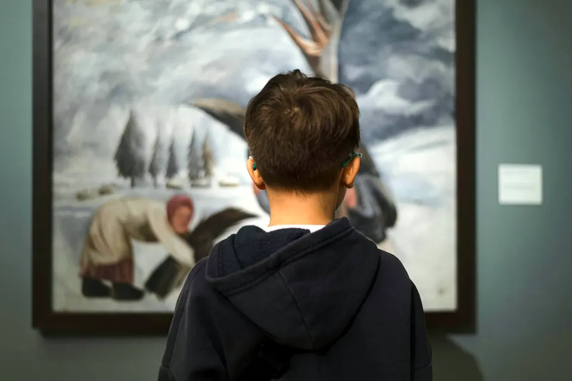
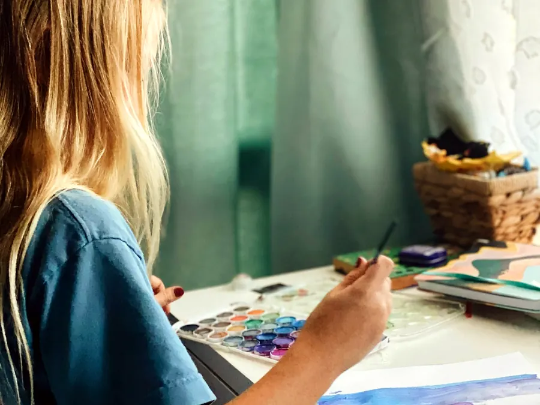

Why students lose interest in science, and how art can help
Before painting a single cell, I looked at what national test data and education research say about students and science. Here is what I found.

Eighth grade science scores are the lowest in fifteen years
The Nation's Report Card tested eighth grade science in 2024 for the first time since the pandemic.
−4
Points lost since 2019
The average score is now equal to the 2009 average.
38%
Below NAEP Basic
The highest share of eighth graders below Basic since 2011.
Record low
For struggling students
Scores at the 10th and 25th percentiles were the lowest ever reported, so the gap between the highest and lowest scorers is widening.
Source: National Assessment Governing Board, 5 Things You Need to Know About NAEP Science Results.
Eighth graders who enjoy science, 2019 and 2024
Share of students answering yes, from the NAEP student survey.
- 2019
- 2024
Source: EdSource (Emma Gallegos), reporting 2024 NAEP survey results, September 9, 2025.
Fewer students enjoy science, and fewer do hands-on science
Scores were only half of the story. The same 2024 survey showed students losing interest: 10 points fewer said they enjoy science activities, and 8 points fewer said they are interested in what they learn in class.
Fewer students also reported often doing the work scientists do. Using evidence from experiments to explain why something happens fell 5 percentage points from 2019, and using information to disagree about a scientific idea fell 4 points.
Interest drops when science turns abstract
Students tend to like science early on, when it is about bodies, animals and weather they can see for themselves. A systematic review of twelve years of research found that interest in science and technology declines as students move up through school, and the decline grows clearer as students move into secondary school.
That timing matches what changes in the classroom. Science shifts from things students can observe to mechanisms they cannot: chemical reactions, enzymes, chromosomes, DNA. Biology stays relatable while it is about the heart or a frog, and turns abstract once it moves inside the cell, which is exactly where this exhibit is set.
Source: Potvin and Hasni, Studies in Science Education, 2014.
Math loss reaches biology too
Thirteen-year-olds' math scores dropped 9 points between 2020 and 2023 on the NAEP long-term trend test. Biology and chemistry lean on math, so that loss carries into science class.
Source: NCES, NAEP Long-Term Trend, 2023.
Screens compete for attention
In PISA 2022, students who spent up to an hour a day on devices for fun scored 49 points higher in math than those who spent five to seven hours, and about 45% felt nervous without their phone nearby. The study shows a correlation and does not prove that screens cause lower scores.
Source: OECD, PISA 2022 Results.

What studies say about learning science through art
Science art is a real area of education research. In a randomized study of fifth graders, units taught with the arts built in led to the same learning at first as regular science units, and better retention two months later for students who read below grade level.
A 2011 paper in the journal Science argued that drawing belongs in science class next to reading, writing and talking, because scientists themselves think and explain with pictures.
Sources: Hardiman, Rinne and Yarmolinskaya, Mind, Brain, and Education, 2014; Ainsworth, Prain and Tytler, Science, 2011.
See the research turned into paintings
Cells, chromosomes and proteins, painted at a size you can study.
Sources
- National Assessment Governing Board. 5 Things You Need to Know About NAEP Science Results (2024 Nation's Report Card, grade 8 science). nagb.gov, 2025.
- Gallegos, Emma. Enjoyment of science plummeted along with scores on 8th grade national test. EdSource, September 9, 2025.
- Potvin, Patrice, and Abdelkrim Hasni. Interest, motivation and attitude towards science and technology at K-12 levels: a systematic review of 12 years of educational research. Studies in Science Education 50, no. 1 (2014).
- National Center for Education Statistics. NAEP Long-Term Trend Assessment Results: Reading and Mathematics, Age 13 (2023). nationsreportcard.gov.
- OECD. PISA 2022 Results (press release, December 5, 2023). oecd.org.
- Hardiman, Mariale, Luke Rinne, and Julia Yarmolinskaya. The Effects of Arts Integration on Long-Term Retention of Academic Content. Mind, Brain, and Education 8, no. 3 (2014).
- Ainsworth, Shaaron, Vaughan Prain, and Russell Tytler. Drawing to Learn in Science. Science 333, no. 6046 (2011).
Photos: Unsplash (Eri Pançi, Caroline Badran, Egor Myznik, Trust Katsande, Madalyn Cox).